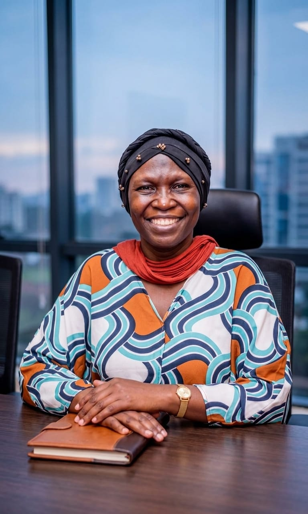

Public Health Leadership · Africa
Habiba
Corodhia
Mohamed
Designing scalable health systems
for women across Africa.

Building Systems That Last
I am a psychologist and social change program specialist with 18+ years of cross-functional experience in non-profit leadership across Sub-Saharan Africa. I am deeply committed to the health and empowerment of women and children, building culturally sensitive interventions that honour the inherent dignity of all.
My work integrates mental health and psychosocial support into every level of program design — connecting clinical care, community outreach, and socio-economic empowerment to create sustainable recovery pathways for women and girls.
I am the Founder and Lead Director of WADADIA, and a PhD candidate in Counselling Psychology at Kenyatta University. Previously, I served as Regional Director of Programs at Fistula Foundation, overseeing initiatives across 29 countries in Africa and Asia.
I am particularly interested in opportunities that drive scalable, system-level impact — from policy integration to community-based care design.
Focus Areas
- Health Systems Strengthening
- Maternal & Reproductive Health
- Mental Health Integration
- Community-Based Care Models
- Survivor Reintegration
- Monitoring & Evaluation
International Recognition
Impact That Defines the Work
Built a Hospital in 18 Months
Designed, mobilised resources, and oversaw construction of a 75-bed women and children's hospital — complete surgical wing, two operating rooms — delivered on time.
Created the OF-COMBAT Screening Tool
Developed the Obstetric Fistula Community-Based Assessment Tool — the first-ever verbal fistula screening tool, achieving over 85% screening success across communities.
Contributed to a $15M Grant Win
Participated in strategic preparation and donor interviews alongside the CEO and Chief of Programs, contributing to the largest single grant in Fistula Foundation's history — from MacKenzie Scott.
Continent-Wide Livelihood Program
Designed and implemented a livelihood restoration program integrating financial literacy, vocational training, and survivor-led microenterprises — reaching 13,000+ marginalised women across Africa.
WADADIA
Advancing holistic care through an integrated model that places dignity at the center of every recovery pathway.
The HER Dignity Model
What We Combine
An integrated approach to women's health
- Clinical Care
- Psychosocial Support
- Socio-Economic Empowerment
- Community-Based Delivery
- Survivor-Centered Frameworks